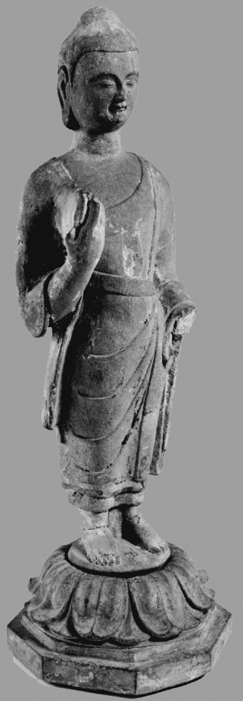
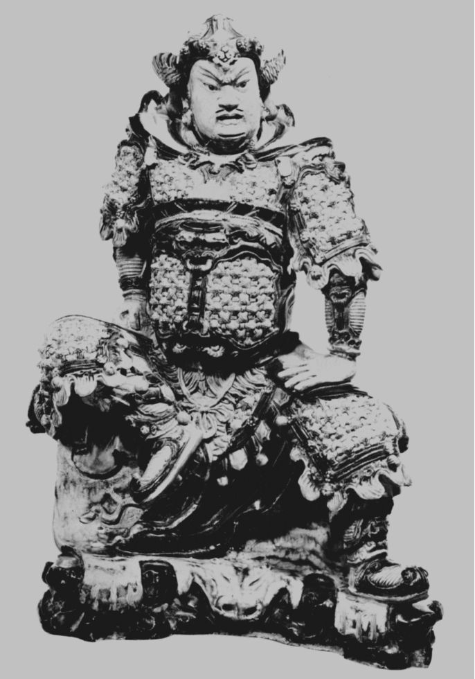
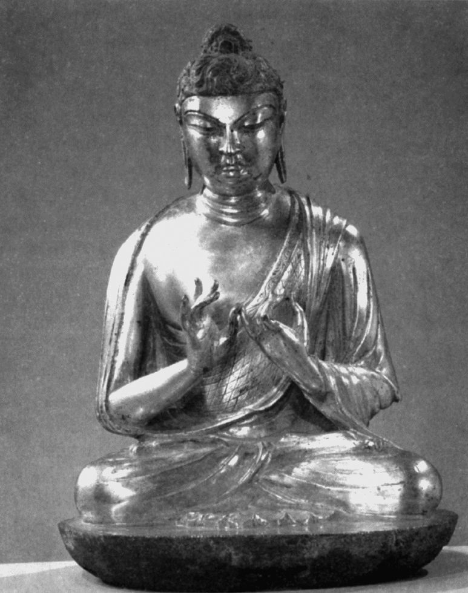
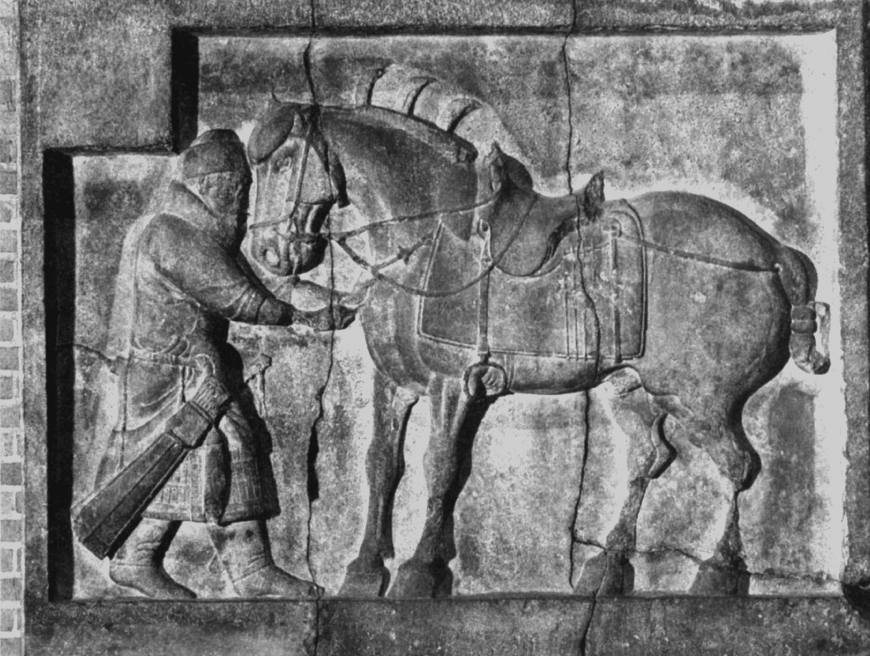

隋朝（581—618年）在中国历史上所起的作用，同大约早8个世纪的秦朝一样。两者都在经历长期的混乱之后，重新统一了中国，然后，都为中国的发展做出了十分重要的贡献。但是，在这一过程中，它们都沉重地压迫人民，都遭到了众多的既得利益集团的反抗，以致都几乎是其创立者一死王朝便崩溃了。
秦朝统治者的伟大贡献是：统一全中国，修建直道和开挖运河，修筑长城，统一度量衡，统一文字，扩大并巩固疆土。隋朝统治者的成就与此非常相似，且同样竭尽全力。他们重建部分失修的万里长城，开挖后来被称为“大运河”的庞大运河系统的主要河段。这一大运河满足了将已成为全国经济中心的长江流域同仍是政治中心的北方连接起来的迫切需要。但是，为此付出的财产和生命的代价是如此昂贵，以致应对这一事业负责的隋炀帝失去了民众的支持，损害了自己的王朝。
拓疆扩土的一系列战争，同样消耗了大量的人力物力。这些战争使帝国的疆域扩大到包括台湾、印度支那的安南和占婆以及西北部的甘肃在内的地区。但是，征服朝鲜最北部领土的企图却惨遭失败；当时的朝鲜分成三个王国。连续四次入侵，都被不屈不挠的朝鲜军击退。于是，不满的士兵发动兵变，而全国各地的农民也因赋税过重而起来造反。隋炀帝逃到南方，618年被缢死。几个觊觎王位者随后展开争夺，获胜者建立了唐朝。唐朝被中国和西方许多历史学家称为最辉煌的朝代。
唐朝最明显的成就是帝国扩张。通过一系列大的战役，它的疆域甚至超过汉朝。唐朝在中亚建立了中国的宗主权，控制整个塔里木盆地，并越过帕米尔高原，控制奥克苏斯河流域各国，以及今阿富汗印度河上游地区。当时世界上，只有中东穆斯林阿拉伯的帝国能与唐朝匹敌。
由于在国内重新建立起强大的中央政府，中国便有可能进行对外征服。早先，汉朝被强有力的地方家族所削弱；这些地方家族积聚起巨大的、自给自足的、免税的大地产，在这上面建造堡垒式的庄园，成功地与中央政权相对抗。佛寺的出现进一步促进了国家的分裂，这些佛寺因拥有广阔的、面积不断增长的土地，也向帝国政府提出了挑战。隋朝和唐朝政府提出了解决这种政治分裂的办法，即实行“均田制”：中央政府分给每个强壮的农民大约19英亩土地。这并不是去剥夺大家族所占有的土地，而是通过其他途径获得土地，如开垦战争期间被荒废的土地。此外，只有自由农民得到政府的赠与地，而实际上，并非他们所有的人都得到了土地。不过，“均田制”的确对削弱大家族的势力、加强唐朝统治有所帮助。它一度中止了半封建大地产的增长。它也增加了国家税收，因为虽然拥有政治权力的大地主不需要交税，但广大小农却要纳税。此外，农民们还得接受军事训练，组成一支常备军，从而加强了帝国政府的军事地位。
唐朝还通过发展一支能管理全国的精干的官僚队伍，来巩固帝国政权。之前隋朝已恢复汉朝在竞争性统考的基础上选拔官吏的制度。唐朝根据儒家“征召有才能的人才能更好地解决国家种种问题”的基本信条，继承并发展了这一制度，而拒绝采纳西方通过改变法律和制度来处理国家事务的典型方式。这一制度完全形成后，由在一连串复杂的仪式中举行的一系列考试组成。首先是地方和县城的考试，每两三年举行一次。大约有2%的考生能通过地方考试，参加几星期后的县城考试。有幸通过考试的人（约一半考生）有资格担任较小的官职，并可进一步参加在省城的乡试；乡试每三年举行一次，成功者有权参加在京城举行的会试。只有6%的考生能通过这一“篱笆”，有资格担任较高的官职。这些人中通常只有三分之一的人能通过由皇帝亲自主持的、最高一级的殿试，被吸收为中国最高贵的学术团体——翰林院——的成员。史官和其他职掌文学的高级官员都是从翰林院中选拔出来的。

图90 一尊塑于隋朝初期的立于莲花基座上的立佛像。这帧作品由砂石雕成，且有着色痕迹（现存中国山西省天龙山，规格为68.5×17.8×15.24厘米）。
最初的考试完全是综合性的，着重强调儒家经典著作，但也包括其他科目，如法律、数学和政治事务。不过，渐渐地，这些考试开始集中到文章体裁和儒家正统观念上。最终结果是形成一种制度：从理论上说，官职之门向一切有才之士敞开，但实际上却有利于那些有足够财力进行多年的学习和准备的阶层。这并不意味着，统治中国的是世袭贵族阶层，相反，它是一个由学者组成的统治集团即文人学士集团。一方面，这一制度为中国提供了一种赢得欧洲人敬佩的有效稳定的行政管理。另一方面，也正是这一制度，扼杀了创造力，培育了顺从性。只要中国仍相对地孤立在东亚，它就会继续提供稳定性和连续性。但是，随着生气勃勃的西方的侵入，它转而起了阻止中国人做出有效的调整和反应的作用。1905年，它最终被彻底废除。

图91 6世纪的中国粗陶塑像，现藏英国伦敦维多利亚和阿尔伯特博物馆。
唐朝首都长安是一座约100多万人口的大城市，宽阔的大道纵横交错，大道上时常挤满了波斯人、印度人、犹太人、亚美尼亚人和各种中亚人。他们是作为商人、使节和雇佣军来到中国的。对外国人来说，除蒙古人统治下的元朝这段短暂时期外，唐朝统治下的中国比其他任何时期都更加开放。
思想自由在宗教问题上表现得最明显。帝国疆土的扩大、陆上和海上商路的重新开放，致使许多外国宗教思想和大批传教士涌入中国，其中佛教的情况尤其如此。佛教最早于汉朝由印度传入中国，在汉朝灭亡后的混乱时期，开始向官方儒教正式挑战。在这一动乱时期，儒教日益受到怀疑，因为它对孝和忠的强调，似乎削弱了一个已经衰弱的国家。因此，佛教的影响迅速增长，并于唐朝初期达到顶峰。这一时期在中国历史上有时被称为“佛教时期”。
虽然佛教在中国获得大量财富，产生了巨大影响，但在此过程中，它却完全中国化了。它还从根本上促成了理学的产生。当时，中国宗教信仰十分自由，思想极为开放，因而各佛教宗派逐渐形成。其中著名的是禅宗派，后传入日本亦称为“禅宗”。这一宗派强调默念和依靠自己，是唐后唯一继续朝气蓬勃、富有理智的教派。中国化的另一特征是，国家试图按照典型的中国人的观念——宗教应为国家利益服务，应作为国家精神机构发挥作用——来控制，甚至贿赂和拉拢寺院和庙宇。

图92 唐朝（618—907年）坐佛像。
从长远的观点来看，控制的企图失败了，最后，政府采取了彻底迫害的政策。佛教强调个人的灵魂得救，而不强调家庭义务的承担，这与中国人的基本传统正好相反。僧徒、尼姑完全与世隔绝，也与中国的传统背道而驰，被认为是不人道的和反社会的。更重要的是，政府垂涎于寺院在数世纪里积累起来的巨大财富和地产，因而进行了一系列的迫害，使佛教在中国虽不像在印度本土那样完全消失，但却遭到了极大的削弱。这种迫害仅限于佛教机构和僧侣，并不包括普通信徒，就如同西方类似形势下发生的情况一样。就中国文明的全面发展而言，佛教介入的最终结果是微不足道的。虽然佛教对中国的哲学、玄学、艺术和文学做出了重大贡献，但它并没像基督教改造欧洲社会那样，从总体上改造中国社会。
在最后一个半世纪的统治中，唐朝统治者面临一个王朝衰落时通常会遇到的种种问题。帝国开支超过税收。同样，人口增长大于土地供给，农民家庭不再能分得小块土地。“均田制”被破坏，富贵人家再次在损害农民的情况下扩大其地产。由于税收制是以人头税为基础，支付不断增长的帝国开支的捐税负担，都落在农民头上，而这时农民占有的土地正在减少。

图93 唐朝皇帝唐太宗（598—649年）墓中的浮雕：飒露紫（昭陵六骏之一）。
唐朝皇帝又设法维持了一个半世纪的统治，但这是一个形势不断恶化的时期。京城中官员的无能和富有刺激性的奢侈生活，加之连续的干旱和普遍的饥荒，使许多州发生叛乱。朝廷谋取了地方军事首领和边境地区各种“野蛮”民族的支持。但是，这些人很快就摆脱朝廷的控制。他们无视朝廷的命令，为争夺注定灭亡的王朝的继承权，相互之间展开斗争。结果，907年，一个叛军首领废黜了唐朝末代皇帝，洗劫了长安城。此时帝国已四分五裂，开始了为时半个世纪的所谓“五代”时期。最后，一位有才干的军事将领重新统一全国，建立了一个新的王朝——宋朝。宋朝（960—1279年）和唐朝都持续了大约三个世纪。